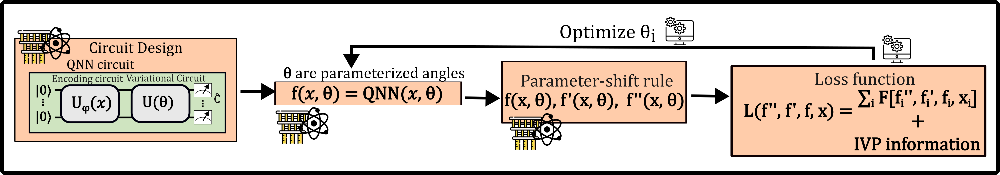

Solving a First-order Ordinary Differential Equation (ODE) using QML methods
In this notebook, we will solve a first order ODE using sQUlearn’s implementations of a Quantum Neural Networks (QNN) differential equation solver, as described in squlearn.qnn.loss.ODELoss and a Quantum Kernel (QK) differential equation solver as as described in squlearn.kernel.QKODE
Differential Equations are building blocks of many scientific fields. One numerical method to solve these problems consists on representing an ansatz in a suitable basis and solving for the optimal coefficients of the differential equation in this basis. Formally, we consider a differential equations given in its functional form, \begin{equation}\tag{1} F = F[\{d^{m}f_{n}/d x^{m}\}_{m,n},\{f_{n}(x)\}_{n},x]=0, \end{equation} where \(f\) corresponds to the function solution of the differential equations. For example, the differential equation \(\frac{df(x)}{dx}=\log(x)\), can be written as \(F\left(\frac{df(x)}{dx}, f(x), f\right) = \frac{df(x)}{dx} - \log(x)\). The ansatz \(f\) can be represented in a parameterized differentiable form, \begin{equation}\tag{2} f=f_{{\theta}}, \end{equation} and the solution to the differential equation can be seen as an optimization problem, where a loss function, \begin{equation}\tag{3} \mathcal{L}_{{\theta}} = \mathcal{L}_{{\theta}}(\{d^{m}f_{n}/d x^{m}\}_{m,n},\{f_{n}(x)\}_{n},x), \end{equation} is optimized to find the ideal parameters \({\theta}_{\mathrm{opt}}\). \begin{equation}\tag{4} {\theta}_{\mathrm{opt}}=\arg_{{\theta}}\mathrm{min}(\mathcal{L}_{{\theta}}[d_{x}f,f,x]). \end{equation} In sQUlearn two approaches are implemented to solve differential equations:
QNN Ansatz

Fig. 1: General Scheme for solving a differential Equation with a QNN as introduced by Ref. [1]
For this case, the ansatz will be given by a parameterized quantum circuit, known as a Quantum Neural Network (QNN) and we will follow the structure introduced by Ref. [1]. Using an encoding circuit unitary \(U_{\phi}(x)\), and a parameterized set of gates \(U_{{\theta}}\), a trial state \(\ket{f_{{\theta}, \phi}(x)} = U_{{\theta}} U_{\phi}(x) \ket{0}\) is constructed. By measuring this state with regard to an arbitrary cost operator \(\hat{C}\), a final trial function is given by, \begin{equation}\tag{5} f_{{\theta}, \phi}(x) = \langle \hat{C} \rangle = \bra{f_{{\theta}, \phi}(x)} \hat{C} \ket{f_{{\theta}, \phi}(x)}. \end{equation} \(\phi\) is a nonlinear function that is used to preprocess the data before encoding it into the quantum state. The encoded state after the first unitary \(U_{\phi}(x)\) is then manipulated by the parameterized unitary \(U_{\theta}\). Note that sQUlearn’s flexibility allows us to not only to stick to this quantum circuit design but to use any of the available circuits (or self-designed) in the library. The derivatives of our ansatz functions are calculated under the hood by sQUlearn and the total loss is obtained. The loss is progressively updated by sQUlearn’s available optimization algorithms.
Without further ado, we proceed to numerically solve the differential equation.
Importing Libraries
In this initial cell, we are importing all the libraries required for the tutorial. We are using sQUlearn to set up the quantum learning problem and sympy, to explicitly write the differential equation that we would like to solve
[2]:
import numpy as np
import sympy as sp
import matplotlib.pyplot as plt
from squlearn import Executor
from squlearn.encoding_circuit import KyriienkoEncodingCircuit
from squlearn.observables import SummedPaulis
from squlearn.optimizers import Adam, LBFGSB
from squlearn.qnn import QNNRegressor
from squlearn.qnn.util import get_lr_decay
from squlearn.qnn import ODELoss as QNNODELoss
from squlearn.kernel import QKODE
from squlearn.kernel.loss import ODELoss as KODELoss
from squlearn.kernel import ProjectedQuantumKernel
Our choice of differential equation is the Bernoulli differential equation, whose general form is given by:
\begin{equation}\tag{6} \frac{dy}{dx} = Q(x)y^n - P(x)y \end{equation}
This family of differential equations has important applications in many fields. Here, we solve a special case known as the logistic equation. The logistic equation has an analytical solution and its applications include: population growth in ecology, the Fermi-Dirac distribution in physics, and many uses in machine learning.
For the logistic differential equation, we take \(Q(x) = P(x) = -6\) and \(n = 2\) in Eq. \((6)\):
\begin{equation}\tag{7} \frac{dy}{dx} = -6y^2 + 6y = 6y(1-y) \end{equation}
First, we need to define the differential equation functional using sympy
[6]:
x, y, dydx = sp.symbols("x y dydx") # Define the symbols
eq = dydx - 6 * y * (1 - y) # Define the differential equation
# Define the differential equation, in our notation y depends on the independent variable x
# initial_values corresponds to y(x_0), i.e. the value of y for the first element in the x array
initial_values = [0.5]
Given the differential equation functional, we need to define the squlearn corresponding loss function.
To correctly construct the loss function, the sympy variable associated to the independent (
x), dependent (y) and derivatives (dydx) must be informed in that order, in this casesymbols_involved_in_ODE=[x, y, dydx].We used the
boundary_handling="pinned"which adds a pinning term to the loss function. This is, \(\mathcal{L}_{\theta} = \mathcal{L}_{\theta}(dy/dx, y, x) + \eta \left(y(x_0)- u_0 \right)^2\), where \(u_0\) corresponds toinitial_valuesand \(\eta\) is a regularization pinning term. As default \(x_0\) corresponds to the first element of the domain array.
[3]:
loss_ODE = QNNODELoss(
ode_functional=eq,
symbols_involved_in_ode=[x, y, dydx],
initial_values=initial_values,
eta=10,
)
Now, we proceed to define our quantum solver model. First we define the quantum circuit used as an ansatz
[4]:
num_qubits = 4
circuit = KyriienkoEncodingCircuit(
num_qubits=num_qubits,
encoding_style="chebyshev_tower", # other options are chebyshev_tower, chebyshev_sparse, chebyshev_product
variational_arrangement="ABA", # other option can be HEA (Hardware Efficient Ansatz), with consecutive entangling layers
num_features=1,
num_encoding_layers=1,
num_variational_layers=14,
)
observable = SummedPaulis(
num_qubits, op_str=("Z"), include_identity=True
) # Define the observable ZIII + IZII + IIZI + IIIZ + IIII
param_op_ini = observable.generate_initial_parameters(seed=1)
param_ini = circuit.generate_initial_parameters(seed=1, num_features=1)
circuit.draw("mpl")
[4]:
Other parameterized circuits available in sQUlearn can be used interchangeably for this ODE solver interface.
We proceed to define our solver by creating a QNNRegressor with the loss function given by loss_ODE. In this case, we are using the Adam optimizer with a decaying learning rate.
[5]:
ode_regressor = QNNRegressor(
circuit,
observable,
Executor("pennylane"),
loss_ODE,
Adam(options={"maxiter": 250, "tol": 0.00000009, "lr": get_lr_decay(0.03, 0.01, 250)}),
param_ini,
param_op_ini,
opt_param_op=True, # if True, the optimizer will also optimize the observable parameters
)
At last, we solve the model by training on a fixed domain (this takes a couple og hours) and compare it to the analytical answer
[6]:
x_numerical = np.linspace(0, 0.9, 10).reshape(-1, 1)
ref_values = np.zeros(len(x_numerical))
ode_regressor.fit(x_numerical, ref_values)
fit: 100%|██████████| 250/250 [5:15:15<00:00, 75.66s/it]
[7]:
x_test = np.linspace(0, 0.9, 100).reshape(-1, 1)
plt.plot(x_test, (1 / (1 + np.exp(-6 * x_test))), "-", label="Exact Solution", linewidth=4)
plt.plot(x_test, ode_regressor.predict(x_test), "--", label="QNN Solution", linewidth=4)
plt.title("$dydx - 6y(1-y) = 0$")
plt.xlabel("x")
plt.ylabel("y")
plt.legend()
[7]:
<matplotlib.legend.Legend at 0x12a9c2a28d0>
QK Ansatz

Fig. 1: General Scheme for solving a differential Equation with a QK as introduced by Ref. [2]
Another way to solve ODEs is by using QKs which encode the information in the higher-dimensional Hilbert space defined by the inner products. To solve the ODE using (quantum or classical) kernels, the function ansatz of Eq. (2) is given by a linear combination of kernel inner products, \begin{equation} f_{\vec{\alpha}}(x) = \sum_{i=1}^N \alpha_i k(x, y_i), \end{equation} where the coefficients \(\vec{\alpha}\) are found by empirically minimizing a loss function as proposed by Ref. [2]. Here we use the symbol \(\alpha\) to represent the parameters of the Ansatz, this is fundamentally different from Eq. (5) of the QNNs, as the parameters only affect the linear combination of the ansatz and not the angles within the quantum circuit. As consquence, one advantage of using kernels is that the loss function only depends on the classical parameters \(\bm{\alpha}\) and the choice of kernel. Therefore, once a kernel is chosen and evaluated at the numerical domain \(y_i\), the optimization does not require using again the quantum computer. Furthermore, the minimization problem can be a convex optimization [2] if \(\frac{\partial^{(2)}{\mathcal{L}}}{\partial \alpha_j} \geq 0 \, \forall \, \alpha_j\), thus a global minimum can exist.
We will solve the same differential equation but need to define the kernel method to be used and the corresponding loss function. The loss function is given as,
[7]:
loss_ODE = KODELoss(
eq,
symbols_involved_in_ode=[x, y, dydx],
initial_values=initial_values,
eta=10,
)
And now we need to define the quantum circuit and kernel method. To showcase sQUlearns flexibility, we will use a modify version of the previous encoding circuit with projected quantum kernel (PQK) method
[8]:
num_qubits = 6
circuit = KyriienkoEncodingCircuit(
num_qubits=num_qubits,
encoding_style="chebyshev_product", # other options are chebyshev_tower, chebyshev_sparse, chebyshev_product
variational_arrangement="HEA", # other option can be HEA (Hardware Efficient Ansatz), with consecutive entangling layers
num_features=1,
num_encoding_layers=2,
num_variational_layers=1,
)
observable = SummedPaulis(num_qubits, op_str=("XYZ"), include_identity=True)
pqk = ProjectedQuantumKernel(executor=Executor("pennylane"), encoding_circuit=circuit)
loss_ODE_squ = KODELoss(
eq,
symbols_involved_in_ode=[x, y, dydx],
initial_values=initial_values,
eta=1,
)
circuit.draw("mpl")
[8]:

The solution domain and optimizer are selected and the model is trained
[9]:
x_numerical = np.linspace(0, 0.9, 20).reshape(-1, 1)
ref_values = np.zeros(len(x_numerical))
optimizer = LBFGSB()
model = QKODE(pqk, loss_ODE_squ, optimizer)
model.fit(x_numerical, ref_values)
[9]:
QKODE(alpha=None,
quantum_kernel=<squlearn.kernel.lowlevel_kernel.projected_quantum_kernel.ProjectedQuantumKernel object at 0x0000022253555CF0>)In a Jupyter environment, please rerun this cell to show the HTML representation or trust the notebook. On GitHub, the HTML representation is unable to render, please try loading this page with nbviewer.org.
QKODE(alpha=None,
quantum_kernel=<squlearn.kernel.lowlevel_kernel.projected_quantum_kernel.ProjectedQuantumKernel object at 0x0000022253555CF0>)[ ]:
plt.plot(x_test, (1 / (1 + np.exp(-6 * x_test))), "-", label="Exact Solution", linewidth=4)
plt.plot(x_test, model.predict(x_test), label="PQK Solution", linewidth=4, linestyle="--")
plt.legend()
plt.title("$dydx - 6y(1-y) = 0$")
plt.xlabel("x")
plt.ylabel("y")
c:\Users\roberto\anaconda3\envs\squlearn_local\lib\site-packages\sklearn\base.py:474: FutureWarning: `BaseEstimator._validate_data` is deprecated in 1.6 and will be removed in 1.7. Use `sklearn.utils.validation.validate_data` instead. This function becomes public and is part of the scikit-learn developer API.
warnings.warn(
Text(0, 0.5, 'y')
References
Kyriienko, O., Paine, A., Elfving, V., “Solving nonlinear differential equations with differentiable quantum circuits”, Physical Review A 103 (2021).
Paine, A., Elfving, V., Kyriienko, O., “Quantum kernel methods for solving regression problems and differential equations”, Physical Review A 107 (2023).